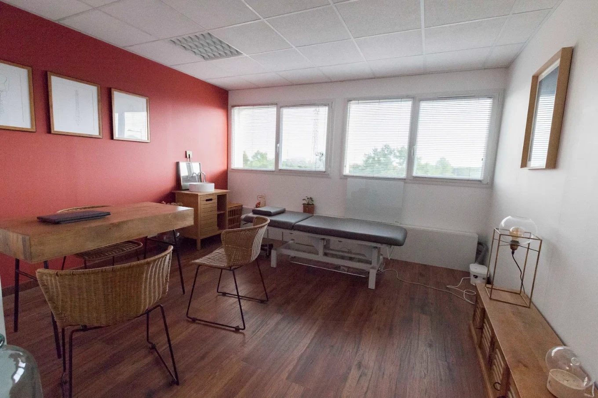
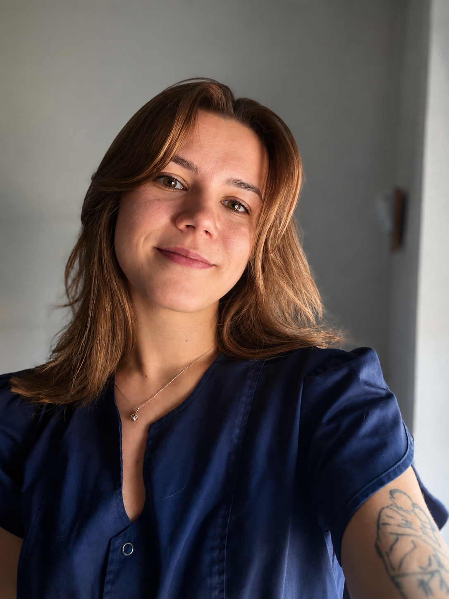

Nourrissons • Enfants • Adultes • Sportifs • Femmes enceintes • Seniors


Diplômée de l’École Supérieure d’Ostéopathie (ESO) de Champs-sur-Marne, j’exerce aujourd’hui au sein de deux cabinets situés à Nantes et à Vertou.
De nature bienveillante, attentive et à l’écoute, j’accorde une importance particulière à la qualité de la relation avec mes patients. Pour moi, une consultation est avant tout un moment d’échange qui doit permettre à chacun de se sentir entendu, compris et accompagné.
Mon objectif est de proposer une prise en charge adaptée à chaque patient, en tenant compte de son histoire, de ses besoins et de ses attentes.
Chaque consultation débute par un temps d’échange afin de comprendre votre situation et vos attentes.
Une prise en charge respectueuse de votre rythme, de votre confort et de vos besoins.
Les techniques utilisées sont choisies en fonction de votre situation et de votre sensibilité.
Lorsque cela est pertinent, des conseils personnalisés peuvent compléter la consultation.
Si nécessaire, je peux vous orienter vers le professionnel le plus adapté à votre situation.
Cabinet de Jérémy Perocheau
31 rue du chemin rouge, 44300 Nantes
Consultations sur rendez-vous.
06 17 51 91 53
Contactez-moi pour connaître mes disponibilités actuelles.Cabinet de Solène Collas
17 rue du Général Bedeau, 44120 Vertou
Consultations sur rendez-vous.
J’ai eu deux fois rendez-vous avec Alicia Fricaud dans le cabinet de Monsieur Pérocheau. Une expérience incroyable, cela faisait des mois que j’avais l’épaule bloquée, un autre ostéopathe et deux kinésithérapeutes n’ont pas réussi à m’aider et, en deux séances, Alicia m’a débloqué l’épaule. En plus d’être un professionnel de santé remarquable, c’est aussi quelqu’un de très agréable avec ses patients. Merci !
Beaucoup d'écoute, beaucoup de pédagogie et de professionnalisme avec en plus des supers résultats à chaque fois.
Votre retour compte et m’aide à améliorer ma pratique.
Laisser un avisJ'accueille des patients pour des motifs variés : douleurs musculo-squelettiques, suivi sportif, périnatalité et troubles digestifs.
Oui. Les nourrissons peuvent être amenés à consulter notamment en cas de plagiocéphalie, de reflux (RGO), de troubles de la succion ou dans le cadre d'un suivi après la naissance.
L’ostéopathie ne remplace pas le suivi médical pédiatrique.
Oui. J'accompagne les femmes enceintes tout au long de leur grossesse, notamment en cas de lombalgies, sciatiques, douleurs du bassin ou certains inconforts digestifs.
Chaque prise en charge est adaptée aux besoins de la patiente et au stade de la grossesse.
En général, la consultation se déroule en sous-vêtements afin de faciliter l’observation et l’examen. Si vous préférez, vous pouvez porter des vêtements près du corps (short type cycliste, legging, débardeur ajusté).
L’essentiel est que vous vous sentiez à l’aise : la consultation doit rester un espace de confort et de respect.
Le plus simple est de me contacter directement par téléphone.